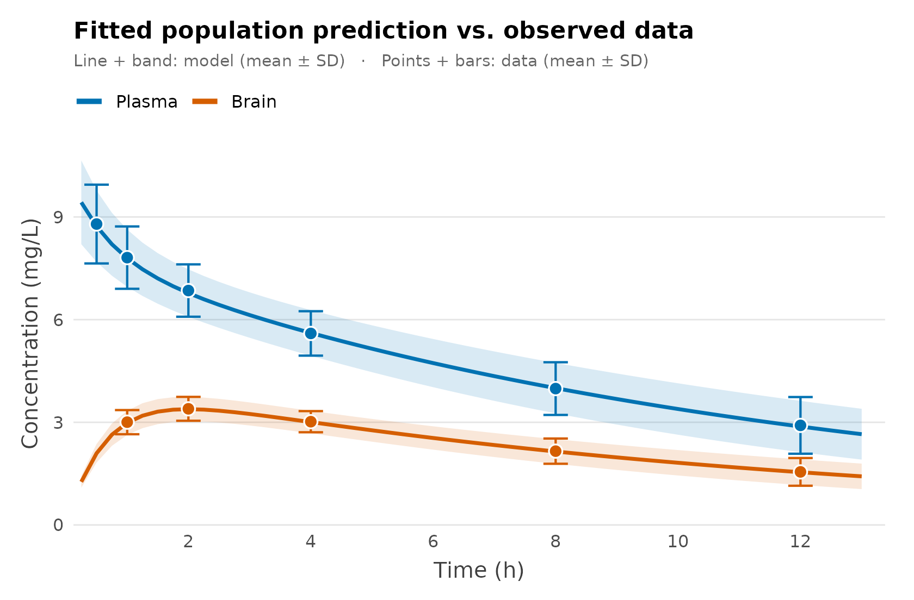

Several observed compartments (plasma and brain)
Source:vignettes/multi-compartment.Rmd
multi-compartment.RmdThe problem
You are developing a CNS drug and you want one number: how much of it reaches the brain? You don’t have patient-level data. What you do have is a published paper with two figures — a plasma and a brain concentration–time curve, each drawn as a mean with error bars. You digitise them into a mean and an SD at every sampling time.
That aggregate summary is exactly what admixr2 is built for. It fits a population PK model directly to means-and-covariances, so a digitised figure becomes a fittable dataset — no individual records required. This vignette builds the analysis in two steps:
- Plasma only — the ordinary single-output workflow, to set the scene.
- Plasma + brain — add the brain as a second observed output and read the brain-penetration ratio straight off the fit.
Step 1 — Plasma only
Start where every PK analysis starts: the plasma curve. In admixr2 a
study is the digitised summary bundled with its design
— the mean vector E, its variance V (here
SD^2, read as a diagonal covariance, exactly what error
bars give you), the sample size n, the sampling
times, and the dosing ev.
plasma_times <- c(0.5, 1, 2, 4, 8, 12)
plasma_mean <- c(8.793, 7.812, 6.850, 5.597, 3.985, 2.910)
plasma_sd <- c(1.151, 0.911, 0.765, 0.649, 0.770, 0.828)
plasma_study <- list(
E = plasma_mean, V = plasma_sd^2, n = 60L,
times = plasma_times, ev = ev
)The model is an ordinary two-compartment PK model with one observed
output, cp. Fitting is a single call to
nlmixr2() with est = "adgh", admixr2’s
Gauss–Hermite estimator:
pk_plasma <- function() {
ini({
tcl <- log(1); tv1 <- log(10); tq <- log(3); tv2 <- log(8)
prop.cp <- 0.05
eta.cl ~ 0.09
eta.v1 ~ 0.04
})
model({
cl <- exp(tcl + eta.cl); v1 <- exp(tv1 + eta.v1)
q <- exp(tq); v2 <- exp(tv2)
d/dt(central) <- -(cl/v1)*central - (q/v1)*central + (q/v2)*periph
d/dt(periph) <- (q/v1)*central - (q/v2)*periph
cp <- central / v1
cp ~ prop(prop.cp)
})
}
fit_plasma <- nlmixr2(pk_plasma, admData(), est = "adgh",
control = adghControl(studies = list(trial = plasma_study)))
fit_plasma
── nlmixr² adgh ──
OBJF AIC BIC Log-likelihood
adgh 229.6289 243.6289 270.8316 -114.8144
── Time (sec fit_plasma$time): ──
optimize covariance elapsed other
elapsed 1.226 0.081 1.307 4.46
── Population Parameters (fit_plasma$parFixed or fit_plasma$parFixedDf): ──
Est. SE %RSE Back-transformed(95%CI) BSV(CV%) Shrink(SD)%
tcl 0.03322 0.03098 93.27 1.034 (0.9729, 1.098) 27.9
tv1 2.292 0.04514 1.97 9.89 (9.053, 10.8) 15.1
tq 0.883 0.3714 42.06 2.418 (1.168, 5.007)
tv2 0.8677 0.1541 17.76 2.382 (1.761, 3.221)
prop.cp 0.004104 0.004104
Covariance Type (fit_plasma$covMethod): r
No correlations in between subject variability (BSV) matrix
Full BSV covariance (fit_plasma$omega)
or correlation (fit_plasma$omegaR; diagonals=SDs)
Distribution stats (mean/skewness/kurtosis/p-value) available in $shrink
Censoring (fit_plasma$censInformation): No censoring
Minimization message (fit_plasma$message):
NLOPT_XTOL_REACHED: Optimization stopped because xtol_rel or xtol_abs (above) was reached. This is a perfectly good plasma model — but look at what it
cannot answer. Its periph compartment is a
mathematical distribution store: we never measured it, and nothing
connects it to the brain. To quantify brain exposure we need brain data
and a model with a real brain compartment.
Step 2 — Add the brain
Here are the brain concentrations digitised from the same paper:
brain_times <- c(1, 2, 4, 8, 12)
brain_mean <- c(3.004, 3.394, 3.018, 2.157, 1.551)
brain_sd <- c(0.353, 0.349, 0.309, 0.369, 0.405)Now swap the anonymous peripheral compartment for a
mechanistic brain compartment. Drug moves plasma →
brain with influx clearance qin and back brain → plasma
with efflux clearance qout. The steady-state brain:plasma
ratio is the quantity we want:
The model now has two observed outputs — plasma
cp and brain cb — so it carries a
residual-error term for each. (vb, the brain volume, is a
fixed physiological constant, not an estimated parameter.)
pk_cns <- function() {
ini({
tcl <- log(1); tv1 <- log(10)
tqin <- log(3); tqout <- log(6)
prop.cp <- 0.05 # plasma residual (proportional)
add.cb <- 0.02 # brain residual (additive)
eta.cl ~ 0.09
eta.v1 ~ 0.04
})
model({
cl <- exp(tcl + eta.cl); v1 <- exp(tv1 + eta.v1)
qin <- exp(tqin); qout <- exp(tqout)
vb <- 5
d/dt(central) <- -(cl/v1)*central - (qin/v1)*central + (qout/vb)*brain
d/dt(brain) <- (qin/v1)*central - (qout/vb)*brain
cp <- central / v1 # plasma concentration
cb <- brain / vb # brain concentration
cp ~ prop(prop.cp)
cb ~ add(add.cb)
})
}Two observed outputs means the study needs two summaries. Instead of
a single E/V, give it an
observations list — one named entry per
observed compartment, each pairing a model output with its own
times, E and V:
cns_study <- list(
n = 60L, ev = ev,
observations = list(
plasma = list(output = "cp", times = plasma_times, E = plasma_mean, V = plasma_sd^2),
brain = list(output = "cb", times = brain_times, E = brain_mean, V = brain_sd^2)
)
)The only other change is telling admData() which outputs
to expect. Then the fit call is identical to Step 1:
fit_cns <- nlmixr2(pk_cns, admData(c("cp", "cb")), est = "adgh",
control = adghControl(studies = list(lit = cns_study)))
fit_cns
── nlmixr² adgh ──
OBJF AIC BIC Log-likelihood
adgh -88.59291 -72.59291 -36.65499 44.29646
── Time (sec fit_cns$time): ──
optimize covariance elapsed other
elapsed 1.453 0.178 1.631 4.508
── Population Parameters (fit_cns$parFixed or fit_cns$parFixedDf): ──
Est. SE %RSE Back-transformed(95%CI) BSV(CV%) Shrink(SD)%
tcl 0.04102 0.01879 45.8 1.042 (1.004, 1.081) 27.0
tv1 2.269 0.01029 0.4535 9.673 (9.48, 9.871) 13.9
tqin 1.085 0.03661 3.373 2.96 (2.755, 3.18)
tqout 1.78 0.04209 2.364 5.932 (5.462, 6.442)
prop.cp 0.04852 0.04852
add.cb 0.01999 0.01999
Covariance Type (fit_cns$covMethod): r
No correlations in between subject variability (BSV) matrix
Full BSV covariance (fit_cns$omega)
or correlation (fit_cns$omegaR; diagonals=SDs)
Distribution stats (mean/skewness/kurtosis/p-value) available in $shrink
Censoring (fit_cns$censInformation): No censoring
Minimization message (fit_cns$message):
NLOPT_XTOL_REACHED: Optimization stopped because xtol_rel or xtol_abs (above) was reached. The same study in long format
If you have used nlmixr2 with multiple
endpoints, the observations list above may feel like a
detour: nlmixr2 does not group observations into per-endpoint objects —
it stacks them in one data frame and labels each row
with the endpoint it belongs to (DVID /
CMT).
admixr2 accepts a study written that way too. Give the study a
data frame with one row per observed endpoint ×
time — an endpoint column (DVID, CMT or
output), a time column (TIME), the mean
(E) and its variance (V, or an SD
column):
cns_long <- list(
n = 60L, ev = ev,
data = data.frame(
DVID = c(rep("cp", length(plasma_times)), rep("cb", length(brain_times))),
TIME = c(plasma_times, brain_times),
E = c(plasma_mean, brain_mean),
V = c(plasma_sd, brain_sd)^2
)
)This is the same study, written differently — admixr2 normalises it into exactly the same likelihood blocks, so the fits agree to the last digit:
fit_long <- nlmixr2(pk_cns, admData(c("cp", "cb")), est = "adgh",
control = adghControl(studies = list(lit = cns_long)))
c(observations = fit_cns$objective, long = fit_long$objective)
observations long
-88.59291 -88.59291 Which form to use is a matter of taste. The observations
list keeps each compartment’s design visibly together and is the more
natural way to write a study by hand. The long format is the
more natural way to write one from data: it is the shape you
already have if your summaries live in a spreadsheet or come out of a
dplyr pipeline, and it is the shape nlmixr2 itself
uses.
Same-subject data: one stacked covariance
The long format earns its keep when plasma and brain were measured in
the same subjects. Then the two curves are correlated,
and that correlation is information the fit should use — but it lives
between the compartments, so there is nowhere to put it in
per-compartment V matrices.
In long format there is: because every observation is just a row, the
study takes one covariance matrix spanning all of them
— rows and columns aligned with the rows of data, exactly
what cov.wt(dv_mat, method = "ML")$cov hands you when you
still have the subject-level matrix (dv_mat: one row per
subject, one column per observation, plasma columns then brain
columns).
cns_joint <- list(
n = 60L, ev = ev,
data = data.frame(
DVID = c(rep("cp", length(plasma_times)), rep("cb", length(brain_times))),
TIME = c(plasma_times, brain_times),
E = c(plasma_mean, brain_mean)
),
V = V_joint # 11 x 11: plasma block, brain block, and the cross-covariance
)admixr2 then scores all 11 observations with a
single multivariate normal, simulating both
compartments from shared random effects. Supplying a study-level
V is what marks the study as same-subject; without one,
each endpoint stays an independent likelihood block. (The
observations form can express this too, via a
cross list of per-pair blocks — see
?admControl — but assembling those by hand is precisely the
chore the long format removes.)
Note that the choice is a modelling decision, not a
formatting one: a joint fit with zero cross-covariances is not
the same as two independent blocks. The model predicts plasma and brain
to co-vary (they share eta.cl and eta.v1);
telling it you observed no covariance is a real statement about the
data, and the likelihood will hold you to it. Use the joint form when
the compartments came from the same subjects, the independent form when
they came from different ones — here, from two separate figures.
Model against data
A single fit now describes both compartments. The figure overlays the observed summaries (points, mean ± SD) with the fitted population prediction — the mean curve and the ±SD band implied by the estimated between-subject variability (1000 simulated subjects, residual error excluded). Plasma and brain are distinguished by colour.
# 1. Pull the fitted estimates from the fit (standard nlmixr2 accessors).
theta <- fit_cns$theta # fixed effects (tcl, tv1, tqin, tqout, residuals)
omega <- fit_cns$omega # between-subject covariance (rows/cols already named)
# 2. Simulate the fitted population. We solve a plain, residual-free copy of the
# model so the band shows between-subject variability alone -- and because a
# multi-endpoint fit can only be re-solved with per-endpoint DVID/CMT tags,
# whereas this gives cp and cb directly.
sim_model <- rxode2::rxode2({
cl <- exp(tcl + eta.cl); v1 <- exp(tv1 + eta.v1)
qin <- exp(tqin); qout <- exp(tqout); vb <- 5
d/dt(central) <- -(cl/v1)*central - (qin/v1)*central + (qout/vb)*brain
d/dt(brain) <- (qin/v1)*central - (qout/vb)*brain
cp <- central / v1
cb <- brain / vb
})
grid <- seq(0.25, 13, by = 0.25)
sim <- rxode2::rxSolve(sim_model,
params = theta[c("tcl", "tv1", "tqin", "tqout")],
omega = omega, nSub = 1000L,
events = ev |> rxode2::et(grid), returnType = "data.frame")
# 3. Summarise model and data as mean +/- SD per time, per compartment.
band <- function(value)
data.frame(time = sort(unique(sim$time)),
mean = tapply(value, sim$time, mean),
sd = tapply(value, sim$time, sd))
pred <- rbind(cbind(compartment = "Plasma", band(sim$cp)),
cbind(compartment = "Brain", band(sim$cb)))
obs <- rbind(
data.frame(compartment = "Plasma", time = plasma_times, mean = plasma_mean, sd = plasma_sd),
data.frame(compartment = "Brain", time = brain_times, mean = brain_mean, sd = brain_sd))
# 4. Model (line + band) over data (points + error bars), coloured by compartment.
pal <- c(Plasma = "#0072B2", Brain = "#D55E00") # Okabe-Ito, colour-blind safe
ggplot() +
geom_ribbon(data = pred,
aes(time, ymin = mean - sd, ymax = mean + sd, fill = compartment),
alpha = 0.15) +
geom_line(data = pred,
aes(time, mean, colour = compartment), linewidth = 1) +
geom_errorbar(data = obs,
aes(time, ymin = mean - sd, ymax = mean + sd, colour = compartment),
width = 0.4, linewidth = 0.6, show.legend = FALSE) +
geom_point(data = obs,
aes(time, mean, fill = compartment),
shape = 21, colour = "white", size = 3, stroke = 0.7) +
scale_colour_manual(values = pal, breaks = c("Plasma", "Brain")) +
scale_fill_manual(values = pal, guide = "none") +
scale_x_continuous(breaks = seq(0, 12, 2),
expand = expansion(mult = c(0.01, 0.03))) +
scale_y_continuous(expand = expansion(mult = c(0, 0.05))) +
coord_cartesian(ylim = c(0, NA), clip = "off") +
guides(colour = guide_legend(override.aes = list(linewidth = 1.4))) +
labs(x = "Time (h)", y = "Concentration (mg/L)",
title = "Fitted population prediction vs. observed data",
subtitle = "Line + band: model (mean ± SD) · Points + bars: data (mean ± SD)",
colour = NULL) +
theme_minimal(base_size = 12) +
theme(
legend.position = "top",
legend.justification = "left",
legend.margin = margin(b = 2),
plot.title = element_text(face = "bold", size = 13),
plot.subtitle = element_text(colour = "grey40", size = 9, margin = margin(b = 9)),
axis.title = element_text(colour = "grey25"),
axis.title.x = element_text(margin = margin(t = 6)),
axis.title.y = element_text(margin = margin(r = 6)),
panel.grid.minor = element_blank(),
panel.grid.major.x = element_blank(),
panel.grid.major.y = element_line(colour = "grey90", linewidth = 0.4),
plot.margin = margin(12, 16, 10, 12)
)
The prediction tracks both compartments. Now the payoff — read the brain penetration directly off the estimates:
Kp,uu ≈ 0.5: at steady state the brain sees about half
the plasma concentration. This is the whole reason the brain data was
needed — with plasma alone, qin and qout are
not separately identifiable and Kp,uu cannot be estimated.
The brain measurements resolve it.
Notes
-
Estimators.
adgh(used here),adfoandadmcall support several observed outputs, each with its own analytical / sensitivity gradient.adirmcdoes not — use one of the other three. See the estimator comparison vignette to choose. - Structural vs. observed compartments. How many compartments the ODEs contain is irrelevant to admixr2; what matters is how many outputs you observe and fit — one in Step 1, two in Step 2.
-
Hard-coded constants such as
vb <- 5keep their value; not every physiological constant has to be an estimated parameter. -
Two ways to write a study. The
observationslist and the long-formatdataframe are interchangeable — same normalisation, same likelihood, same numbers. Independent experiments can also carry a per-endpointncolumn and a per-endpointev(a list of event tables keyed by endpoint). -
Same-subject data. Here plasma and brain came from
separate figures, so they are treated as independent likelihood blocks.
If they had instead been measured in the same subjects, supply
the plasma–brain cross-covariance for a joint fit — one stacked
Vin long format, or a per-output-paircrosslist withobservations; see?admControl.
See also
- PD and PK/PD data — add a pharmacodynamic endpoint
- Multiple studies — meta-analysis across studies
- Diagnostic plots ```